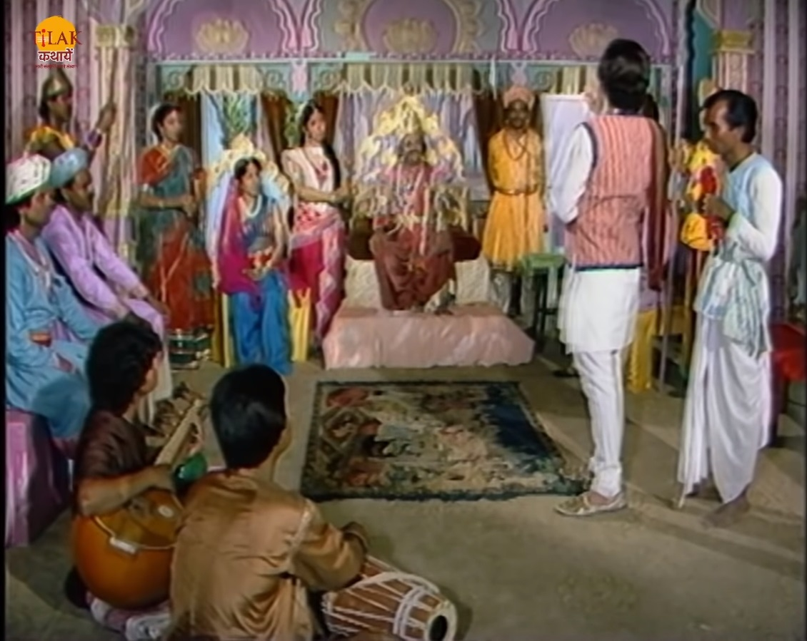
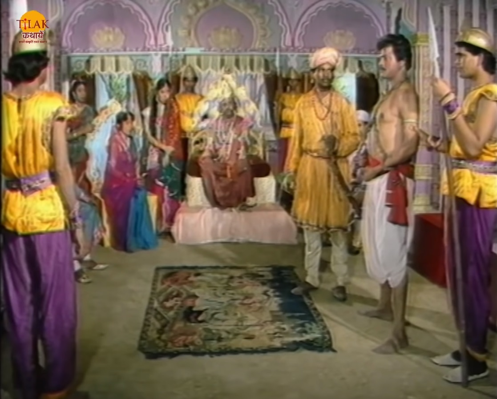

| बेताल विक्रम को एक और कहानी सुनता है जिसमें एक नगर में गरीब कवि हरीभट्ट रहता था वह एक दिन राजा सत्यदेव की सभा में जाकर कविता सुनता है जिसे सुन राजा प्रसन्न होते हैं और राजकुमारी प्रियवंदा कवि से प्रेम करने लगती है। हरीभट्ट को राजकुमारी ख़त भेजने लगती है और हरीभट्ट के मन में लालच आने लगता है की उसकी शादी राजकुमारी से होगी तो वह राजमहल में रह सकेगा। हरी भट्ट राजकुमारी के सारे ख़त सम्भाल कर रखने लगा। राजकुमारी और कवि में प्रेम गहरा होता जाता है। एक दिन राजा के सत्यदेव के पास उनका शत्रु धर्म देव आता है और राजा से शत्रुता ख़त्म करने के लिए अपने बेटे इंद्रजीत के लिए प्रियवंदा का हाथ माँग लेता है राजा सत्यदेव प्रजा के हित को देख कर राजा धर्मदेव से मित्रता कर लेता है और शादी के लिए हां कर देता है। |  | यह समाचार सुनकर राजकुमारी अपने पिता के पास आती है और उनसे कहती है की वो किसी और से प्रेम करती है उन्होंने उनसे पूछे बिना उसका रिश्ता क्यों किया तो राजा उसे समझता है की बेटी मैंने अपनी प्रजा के बारे में पहले सोचा और अपनी बेटी के हित के बारे में बाद में इसलिए राजा अपनी बेटी से विनती करता है की वो अपने प्रेम का बलिदान प्रजा के लिए दे दे। राजकुमारी अपने पिता की बात मान लेती है और कवि हरीभट्ट से मिलने के लिए अपनी दासी को भेजती है रात्रि में दोनों मंदिर में मिलने के लिए आते हैं। |
उसी नगर में एक चोर भी था जिसका नाम कालिया था उसकी राज्य में बहुत दहशत थी राजा भी उस से परेशान हो चुका था। वह चोर उसी दिन मंदिर में बैठा था जब राजकुमारी और कवि मिलने वाले थे। राजकुमारी को आते देख वह चोर मंदिर में छिप जाता है। राजकुमारी हरी भट्ट को सारी बात बताती है की उसे अपने प्रेम को त्यागना होगा क्योंकि उसका रिश्ता उसके पिता ने राजकुमार इंद्रजीत के साथ तय कर दिया है और यदि वह रिश्ता टूटा तो दोनों राज्यों में युद्ध हो सकता है जिसका परिणाम बहुत बुरा होगा। कवि हरीभट्ट राजकुमारी की बात सुनकर उसे कहता है की वो उनकी बात मान लेगा यदि वो अपने सारे गहने उसे दे देगी तो यदि वो ऐसा नहीं करेगी तो वह उसके लिखे सारे ख़त उसके होने वाली पति को भेज देगा। राजकुमारी कवि की बात सुन कर दुःखी होती है और उसकी बात मान लेती है। चोर यह सब छिप कर सुन रहा था।
चोर राजकुमारी की मदद करने के लिए हरीभट्ट के घर जाता है और उस से सारे ख़त माँग लेता है दोनों में लड़ाई शुरू हो जाता है और कालिया कवि को मार कर वहाँ से सारे ख़त लेकर मंदिर पहुँच जाता है जहां राजकुमारी पहले से सारे गहने लेकर तैयार बैठी थी। कालिया चोर राजकुमारी को बताता है की वो चोर है तो राजकुमारी डर जाती है कालिया चोर उन्हें कहता है आप डरे नहीं वो यहाँ चोर नहीं बल्कि उनकी प्रजा बनकर आया है और हरीभट्ट से सारे ख़त ले कर उनको देने आया है।
कालिया राजकुमारी को बताता है की हरीभट्ट भी ज़िंदा नहीं बचा है। तभी वहाँ सैनिक आ जाते हैं कालिया राजकुमारी को छिपने के लिए कहता है और सैनिक उसे पकड़ कर अपने साथ ले जाते हैं। राजकुमारी वापस राजमहल लौट आती है। उसे कालिया चोर की चिंता हो रही थी तो वह राजा सत्यदेव के पास जाकर सारी बात बता देती है। अगले दिन राजा के सामने कालिया चोर को लाया जाता है
| बेताल इतनी कहानी सुना कर रुक जाता है और राजा विक्रम से पूछता है की अब ये बता की राजा सत्यदेव कालिया चोर के साथ क्या करेगा उसे दंड देगा या माफ़ कर देगा। विक्रम बेताल के प्रश्न का उत्तर देता है की राजा अपने कर्तव्य को पूरा करने के लिए चोर को मृत्यु दंड देगा क्योंकि उसे अपनी बेटी से पहले प्रजा की सोचनी है और चोर ने बहुत से क़त्ल और चोरियाँ की थी जो माफ़ नहीं की जा सकती और उसकी बेटी की इज्जत बचाने के लिए वो उसे माफ़ नहीं कर सकता था |  | इसलिए राज औसे मृत्यु दंड ही देगा। यह सुन बेताल विक्रम से कहता है की तूने न्याय तो अच्छा किया है लेकिन मेरी शर्त तू भूल गया की तू बोलेगा तो मैं चला जाऊँगा और तू बोला इसलिए बेताल फिर से उड़ जाता है और अपने पेड़ पर जाकर लटका जाता है। |
| Previous Story | Home | Next Story |